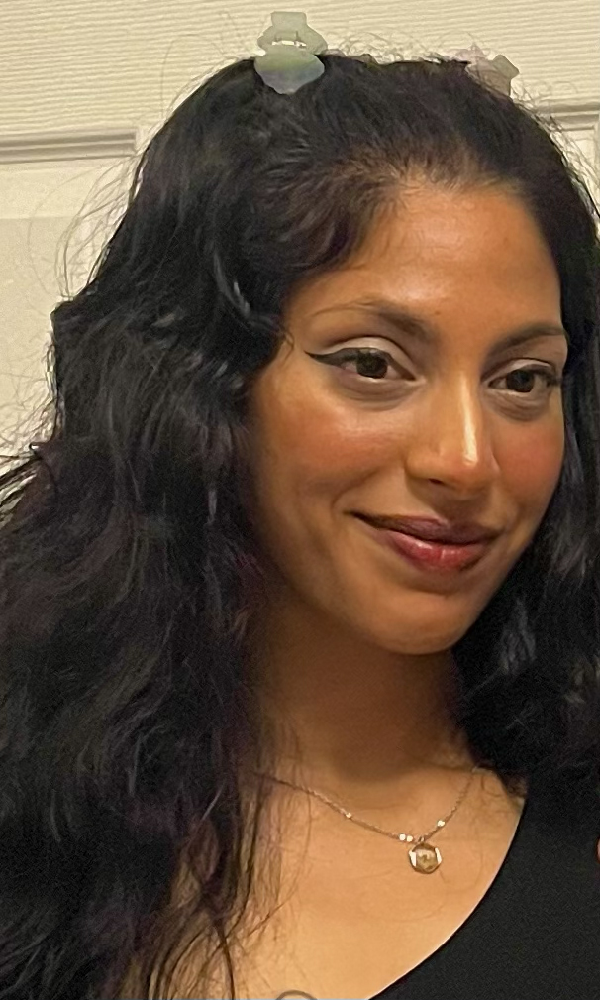

About Me
It's me, Avani! I am a first-year Graphic Design student at Algonquin College. I am obsessed with summertime and the sea 🌊. One of the reasons that I love summer is because it's beautiful for biking and swimming along the beach, which are two activities that I enjoy! I also get most of my artistic inspiration during summer and my colour choices express that.
I love to paint clouds and warm skies and to be outdoors as often as I can. I will admit that, though I try, I struggle to spend as much time outside during the winter. Another thing about me: I hate being cold and I am notoriously cold when no one else is complaining. Either way, I try to keep my spirit warm.
Being human is tough.
-Norah Jones
My Skills
- communications
- drawing
Graphic Design Courses
- Graphic Design 2
- Concept Sketching
- Computer Graphics 2
- Typography 2
- Wed Design 1
- Communication for Graphic Design